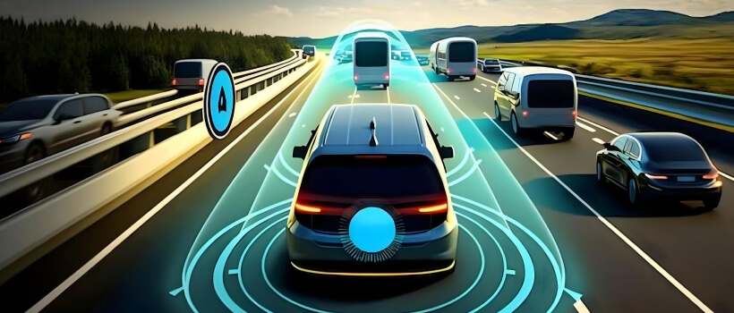
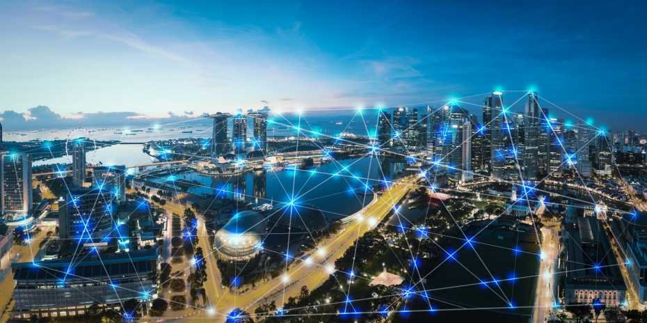
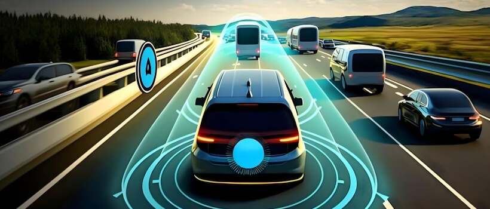
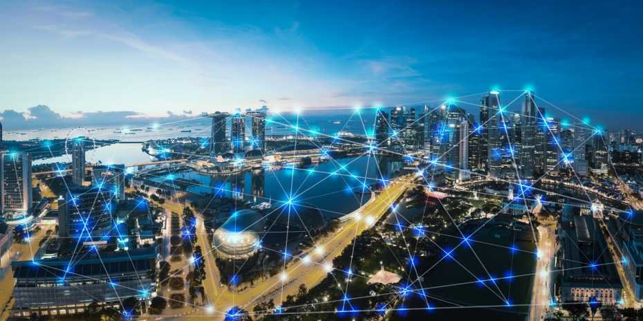
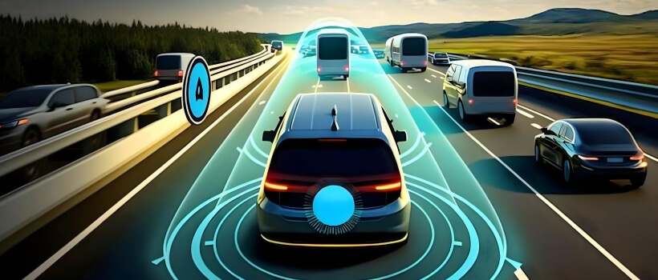
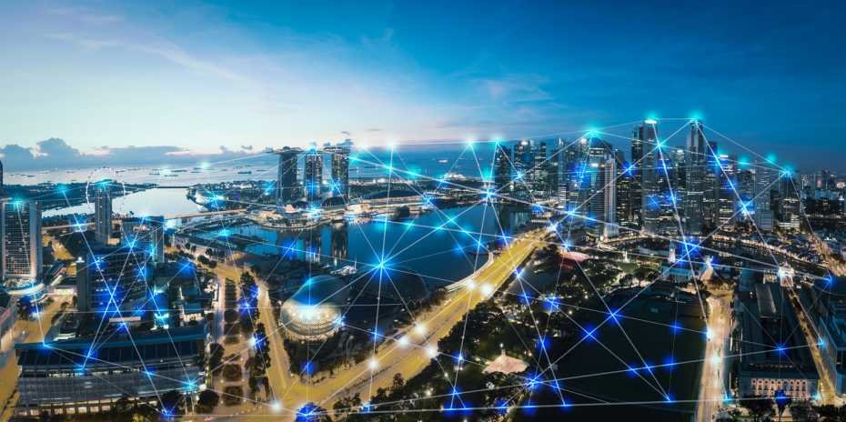

Şəhər Sektorları


 



Interaktiv Skyline
Binaların üzərinə hover et və sektor haqqında qısa məlumat əldə et.
Kosmos Akademiyası
Kosmik texnologiyalar üzrə kurslar və təlimlər
Zaman Mərkəzi — Timeline
İlin 2025-dən 2100-ə qədər texnoloji proqnozlar.
Future Stats Dashboard
Şəhərin inkişaf göstəriciləri
67%
Yaşıl enerji istifadəsi
13K+
AI nəqliyyat vasitələri
7000+
Telemed xidmətləri
Əlaqə & İdeya Göndər
Sən də öz ideyanı buradan göndər.